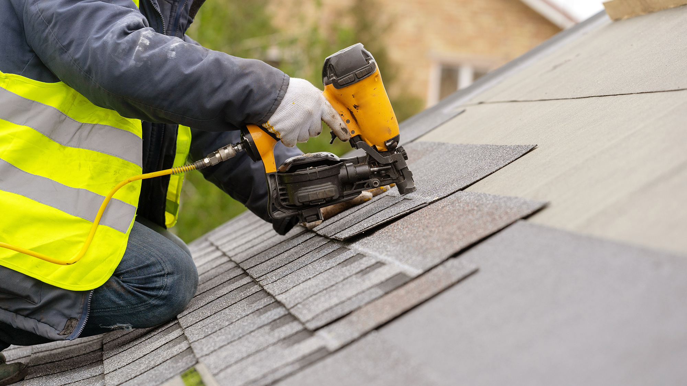
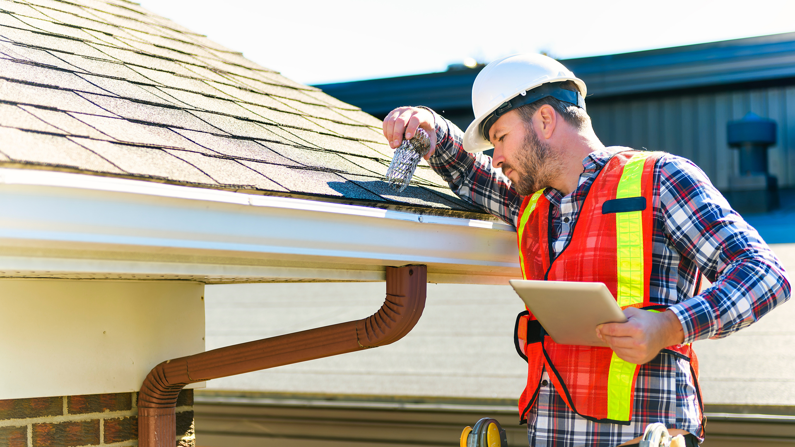
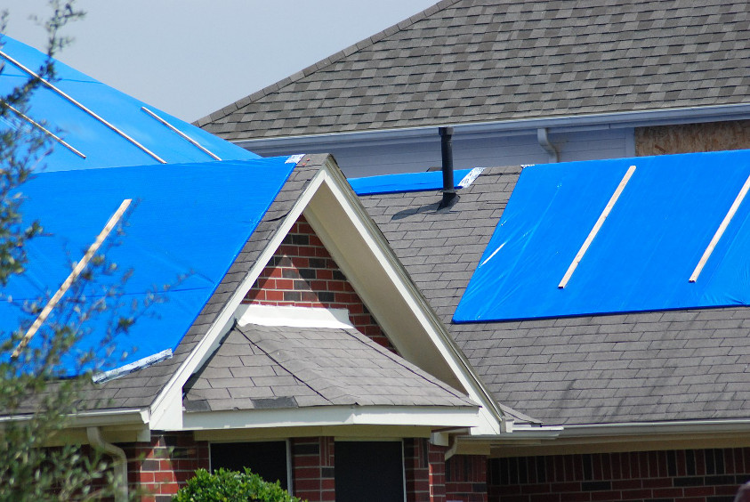

Our Roofing Services
We offer a wide range of professional roofing services tailored to your needs.
Roof Installation
We provide high-quality roof installation for residential and commercial properties, ensuring durability and reliability.
Roof Repair & Maintenance
Keep your roof in excellent condition with our expert repair and maintenance services. We address leaks, cracks, and wear and tear.
Roof Inspections
Regular inspections to identify potential issues before they become costly repairs. Protect your investment with our detailed reports.
Emergency Roofing Services
Storm damage? Immediate concerns? Our team is ready 24/7 to provide emergency roofing services when you need them most.
 ↑ Back to Top